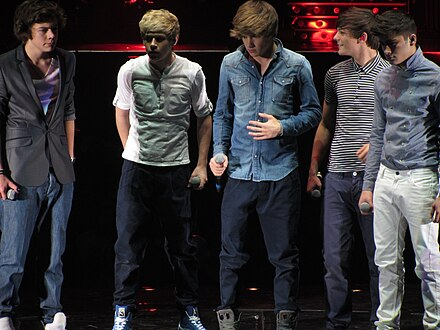
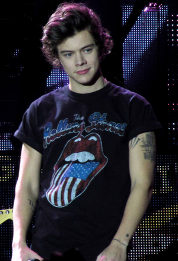
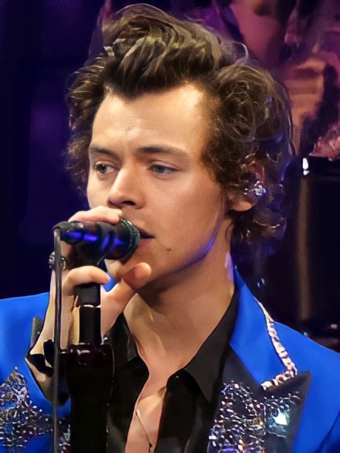
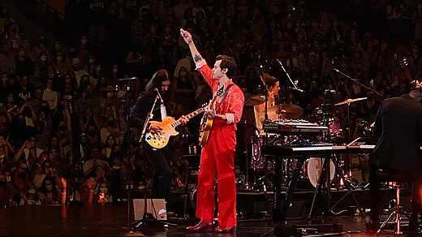
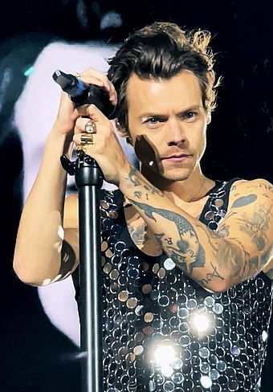
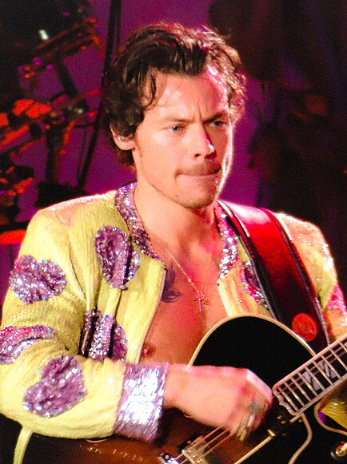

Harry Edward Styles (born 1 February 1994) is an English singer, songwriter, and actor. Known for his influence in popular culture, showmanship, artistry, and philanthropy, he is a subject of widespread public interest with a vast fanbase. Styles is considered to be among the most successful solo artists who have emerged from a boy band.
Styles's musical career began in 2010 as part of One Direction, a boy band formed on the British music competition series The X Factor after each member of the band had been eliminated from the solo contest. They became one of the best-selling boy bands of all time before going on an indefinite hiatus in 2016. Styles released his self-titled debut solo album through Erskine and Columbia Records in 2017. It debuted at number one in the UK and the US and was one of the world's top-ten best-selling albums of the year, while its lead single, "Sign of the Times," topped the UK Singles Chart.
His second album, Fine Line (2019), debuted atop the US Billboard 200 with the biggest ever first-week sales by an English male artist, with Rolling Stone including it in their 2020 revision of the 500 Greatest Albums of All Time. Its fourth single, "Watermelon Sugar," topped the US Billboard Hot 100. Styles's widely acclaimed third album, Harry's House (2022), broke several records, receiving the Grammy Award for Album of the Year in 2023. It was included in the 2023 revision of Rolling Stone's 500 Greatest Albums of All Time. Its lead single, "As It Was," became the number-one song of 2022 globally, according to Billboard.
Styles has received various accolades, including six Brit Awards, three Grammy Awards, two Ivor Novello Awards, three American Music Awards, and four MTV Video Music Awards. His film roles include Dunkirk (2017), Don't Worry Darling (2022), and My Policeman (2022). Styles is also known for his flamboyant fashion. Wearing a blue Gucci dress, he became the first man to appear solo on the cover of Vogue.
Born
Harry Edward Styles
1 February 1994 (age 31)
Redditch, Worcestershire, England
Occupations
- Singer
- Songwriter
- Actor
Years Active
2010-present
Works
Title
Co-founder, CEO, and owner of Erskine Records
Co-founder and owner of Pleasing
Awards
Origin
Holmes Chapel, England
Genres
- Pop
- Pop Rock
- Soft Rock
- Synth-pop
- Britpop
Instruments
- Vocals
- Guitar
Labels
- Syco
- Columbia
- Erskine
Formerly of
One Direction
Website
Signature
Early Life
Harry Edward Styles was born on 1 February 1994 in Redditch, Worcestershire, England,[c][3] the son of pub owner[4] Anne Twist (née Selley) and finance worker Desmond "Des" Styles.[5][6][7] When he was a child, he moved with his parents and older sister, Gemma, to the village of Holmes Chapel in Cheshire.[5] His parents divorced when he was seven years old. His mother later married business partner John Cox,[8] although they divorced years later. Through her subsequent marriage in 2013 to Robin Twist, who died of cancer in 2017, Styles gained an older stepbrother Mike, and a stepsister, Amy.[9]
Styles said he experienced a "great childhood" and always felt supported by his parents.[6] As a child, he sang covers on a karaoke machine he was given by his grandfather, and the first song he recorded was Elvis Presley's "The Girl of My Best Friend."[10] Styles attended the Holmes Chapel Comprehensive School,[11] where he was the lead singer for the band White Eskimo, which won a local Battle of the Bands competition.[11][12] At the age of 16, he worked part-time at the W. Mandeville Bakery in Holmes Chapel.[12] Styles also worked a paper round in the local village[13] and at a stable mucking out horses during his adolescence.[14]
Career
2010-2015: The X Factor and One Direction
Following a suggestion from his mother, on 11 April 2010, Styles auditioned as a solo contestant for the seventh series of the British televised singing competition The X Factor, singing a rendition of Train's "Hey, Soul Sister." After Simon Cowell suggested that the track was not right for him, he instead sang a rendition of Stevie Wonder's "Isn't She Lovely."[6][15] He advanced to bootcamp but failed to progress further. Four others in his age group who were also eliminated were put together to form a boy band in July 2010 to compete in the "Groups" category, mentored by Cowell.[16] The group consisting of Styles, Niall Horan, Liam Payne, Louis Tomlinson, and Zayn Malik practised for two weeks;[17][18] Styles suggested the name One Direction to his colleagues which they agreed to.[19] They began to gain considerable popularity in the UK,[20] and within the first four weeks of the live shows, were Cowell's last act in the competition.[21] The group eventually reached the final of The X Factor and finished in third place.[22]
In January 2011, One Direction signed a recording contract with Cowell's label Syco Records.[23][24] Their UK number one debut single, "What Makes You Beautiful," and their debut studio album, Up All Night, were released later that year.[25][26] The album, which contained three songs co-written by Styles, debuted at number one in the United States.[27][28] Their four succeeding studio albums—Take Me Home (2012), Midnight Memories (2013), Four (2014) and Made in the A.M. (2015)—all debuted at number one in the UK.[29] Midnight Memories was the world's best-selling album of 2013,[30] and its accompanying Where We Are Tour was the highest-grossing tour of 2014.[31] After the release of Four, One Direction became the only group in the 58-year history of the Billboard 200 albums chart to have their first four albums debut at number one.[32] The albums spawned a string of successful singles, including "Live While We're Young," "Little Things," "Best Song Ever," "Story of My Life," "Drag Me Down" and "History."[33][34][35] Styles also co-wrote the song "Just a Little Bit of Your Heart" for Ariana Grande's 2014 album My Everything.[36]
Not wanting to "exhaust" the fan base, upon Styles's suggestion, One Direction went on an indefinite hiatus in 2016, after completing promotional activities related to Made in the A.M.[6][37][38] Since their debut, One Direction have sold 70 million records worldwide, including 7.6 million albums and 26 million singles in the US, becoming one of the best-selling boy bands of all time.[34][39][40] The group amassed numerous accolades, including seven Brit Awards,[41] seven American Music Awards,[42] six Billboard Music Awards,[43] and four MTV Video Music Awards.[44] While Styles has been generally positive about his time in One Direction, he has revealed that the hyper-visibility he experienced while being in the band was not always easy to deal with.[45] Styles attributed his avoidance of social media to past pressure that he should be constantly accessible online.[45][46] He has spoken about being scared of saying the wrong things in interviews and of fear that not answering questions such as the number of people he slept with would cause journalists to leave the interview annoyed with him.[45] His contracts with One Direction contained "cleanliness clauses" which stated that the group would be "null and void" if he did not obey them[...].[45] He expressed that he "burst into tears" when he signed a solo contract without these clauses because he felt "free."[45]
2016-2018: Harry Styles and Dunkirk
As a solo artist, Styles joined Jeffrey Azoff's Full Stop Management and talent agency CAA, signing a recording contract with Columbia Records in the first half of 2016.[47][48] Around this time, he also launched his own record label, Erskine Records.[47] Recording for Styles's debut album occurred throughout 2016 in Los Angeles, London and Port Antonio, Jamaica, where Styles and his collaborators spent a two-month writing retreat in the autumn.[6] In March 2017, he announced that his first solo single, "Sign of the Times," would be released on 7 April.[49] The song peaked at number one on the UK Singles Chart and number four on the Billboard Hot 100.[50][51] A glam rock-influenced soft rock power ballad,[52][53] it drew comparisons to the work of David Bowie.[54] Rolling Stone ranked "Sign of the Times" as the best song of 2017.[55] Its music video featured Styles flying and walking on water[56][57] and won the Brit Award for British Video of the Year.[58] In April, Styles was a musical guest on Saturday Night Live in the US and made his debut televised solo performance in the UK on The Graham Norton Show.[59][60]
His self-titled debut album was released in May 2017,[61] whereupon it debuted at number one in several countries, including Australia, the UK and the US.[62] The record was influenced by 1970s soft rock and was described by Variety as a "classic cocktail of psychedelia, Britpop, and balladry."[63][64] It received generally favourable reviews from critics[65][66] and was included in several publications' lists of the best albums of 2017.[67][68][69] Harry Styles yielded two more singles, "Two Ghosts" and "Kiwi."[70][71] The film Harry Styles: Behind the Album, which documented the writing and recording process for the album, was released in May exclusively on Apple Music.[72] Styles embarked on his first headlining concert tour, Harry Styles: Live on Tour, from September 2017 through to July 2018, performing in North and South Americas, Europe, Asia, and Australia.[73][74] On tour he debuted two unreleased songs, "Anna" and "Medicine."[75]
Styles made his feature film debut in Christopher Nolan's war film Dunkirk, in July 2017, playing a British soldier named Alex in the Dunkirk evacuation during World War II.[76] He appeared alongside an ensemble cast which included Fionn Whitehead, Tom Glynn-Carney, Jack Lowden, Kenneth Branagh, Cillian Murphy, Mark Rylance, and Tom Hardy.[77] Styles won the part over "thousands of young men;"[78] Nolan later admitted he was unaware of the extent of Styles's fame and that he was cast "because he fit the part wonderfully and truly earned a seat at the table."[79][80] The Daily Telegraph film critic Robbie Collin praised Styles for his "bright, convicted, and unexpectedly not-at-all-jarring performance."[81]
In November 2017, BBC One broadcast Harry Styles at the BBC, a one-hour television special presented by Nick Grimshaw.[82] Later that month, he performed at the Victoria's Secret Fashion Show held in Shanghai.[83] At 2017 ARIA Music Awards, Styles received the Best International Artist award.[84] He guest-hosted The Late Late Show with James Corden in December.[85] Together with Jack Antonoff and Ilsey Juber, Styles cowrote "Alfie's Song (Not So Typical Love Song)," performed by the band Bleachers, for the soundtrack of the film Love, Simon (2018).[86] He also served as an executive producer on the CBS sitcom Happy Together, which premiered in October 2018 and was inspired by his time living with television producer Ben Winston and his wife.[87] In 2018, Styles began modelling for the Italian fashion house Gucci, appearing in several campaigns for the brand.[88][89]
2019-2021: Fine Line
In July 2019, it was reported that Styles was in early talks to play Prince Eric in the live-action Disney film, The Little Mermaid (2023).[90] However, he ultimately turned the part down for various reasons which included touring and wanting to pursue darker, non-musical roles.[91][92][93] The part ultimately went to Jonah Hauer-King.[94] "Lights Up," the lead single from Styles's second album, Fine Line, was released in October 2019, debuting at number three in the UK.[95][96] The song featured a "soft-touch re-entry into the pop slipstream," according to music writer Jon Caramanica.[97] Styles served as both host and musical guest on Saturday Night Live in November.[98] The second single preceding Fine Line, "Adore You," was released in December, peaking at number seven in the UK and at number six in the US.[99][100][101] That month, Styles again guest-hosted The Late Late Show with James Corden.[102]
Fine Line was released on 13 December. The album was recorded at the Shangri-La studio in Malibu, California, with the same production team behind Styles's debut album, and features a similar sound to Harry Styles while also incorporating elements of funk and soul.[103][104] It received generally positive reviews from critics.[105] The album peaked at number two in the UK[106] and topped the US charts, breaking the record as the biggest sales debut from an English male artist in the US since Nielsen SoundScan began electronically tracking sales data in 1991.[107] Rolling Stone ranked it at number 491 in their 2020 list of the "500 Greatest Albums of All Time."[108] Five other singles, "Falling," "Watermelon Sugar," "Golden," "Treat People with Kindness" and the title track, were released from the album.[109] "Watermelon Sugar" became Styles's fourth UK top-ten single, peaking at number four,[110] as well as his first number-one single in the US.[111] A tour to support Fine Line, entitled Love On Tour, which was originally set to take place throughout 2020,[112] was postponed until 2021 due to the COVID-19 pandemic.[113][114]
At the 2020 Brit Awards, Styles was nominated for British Male Solo Artist and British Album of the Year.[115] In March 2020, he performed an NPR Tiny Desk concert,[116] and in July, he narrated a bedtime story titled Dream with Me for the relaxation app Calm.[117] Styles co-wrote the song "Changes" for Cam's album The Otherside.[118] Later that year, Styles won the Favorite Pop/Rock Album award for Fine Line at the 48th American Music Awards,[119] the Best International Artist award at the 34th ARIA Music Awards,[120] and the Chart Achievement Award at the 27th Billboard Music Awards.[121] He was also named Variety's Hitmaker of the Year.[122] At the 63rd Annual Grammy Awards in March 2021, he received three nominations for Best Pop Vocal Album (Fine Line), Best Pop Solo Performance ("Watermelon Sugar") and Best Music Video ("Adore You"), winning for Best Pop Solo Performance.[123][124] "Watermelon Sugar" also earned Styles his second Brit Award for British Single of the Year during the 2021 ceremony.[125] After previous postponement, Love On Tour kicked off on 4 September 2021 in Las Vegas.[126] At the 2021 Ivor Novello Awards, "Adore You" won the award for Most Performed Work.[127] Styles made a cameo appearance as Eros / Starfox, brother of Thanos, in the mid-credits scene of the Marvel Cinematic Universe superhero film Eternals, which was released in November 2021.[128] He launched his gender-neutral skin and nail care brand, Pleasing, that month.[129]
2022-present: Harry's House and further acting roles
In 2022, Styles achieved critical and commercial success with his third album, Harry's House.[130][131] Its lead single, "As It Was," debuted atop the UK and US charts, becoming his second solo number-one single in both countries.[132][133] In the US, it became the fourth-longest-running number-one in the charts history, at 15 weeks.[134] The album similarly debuted atop the UK and US charts.[135][136] During its release week, Styles occupied the top spot of the album and singles charts in over fifteen countries, including the UK and US, with Harry's House and "As It Was," respectively.[131] With four tracks from the album concurrently charting within the US top 10, he became the first British solo artist to achieve this feat.[137] He headlined the Coachella Valley Music and Arts Festival in April to a crowd of over 100,000 people.[138] In June, Styles and his song "Music for a Sushi Restaurant" were featured in a new AirPods commercial for Apple.[139] A music video for Harry's House's second single, "Late Night Talking," was released on 13 July.[140] Later that month, Harry's House was short-listed for the Mercury Prize.[141] "As It Was" became the number-one song of 2022 globally, according to Billboard.[142] At the 2022 MTV Video Music Awards, Styles received three accolades, including Album of the Year for Harry's House.[143] The album won Album of the Year and Best Pop Vocal Album at the 65th Grammy Awards and British Album of the Year at the 43rd Brit Awards.[144][145] Rolling Stone ranked Harry's House at number 491 on its 2023 revision of the "500 Greatest Albums of All Time" list.[146]
Styles auditioned for the role of Elvis Presley in Baz Luhrmann's musical biopic Elvis (2022). Luhrmann stated that while "Harry is a really talented actor ... the real issue with Harry is, he's Harry Styles. He's already an icon."[147] Styles starred alongside Florence Pugh in the 2022 psychological thriller film Don't Worry Darling, directed by Olivia Wilde.[148] Having premiered at the 79th Venice International Film Festival, the film, as well as his performance, received mixed reviews.[149][150] Steph Green, writing for the BBC, noted, "Harry Styles doesn't feel up to the material here, with leaden line delivery and a lack of light and shade making his scenes opposite Pugh fall flat,"[151] but some were more positive of his performance, with Owen Gleiberman writing, "With his popping eyes, floppy shock of hair, and saturnine suaveness, he recalls the young Frank Sinatra as an actor."[152] Also in 2022, Styles starred alongside Emma Corrin in My Policeman, a film adaptation of the 2012 novel of the same name which premiered at the Toronto International Film Festival.[153] At the 2022 TIFF Tribute Awards, the main cast of the film were awarded the TIFF Tribute Award for Performance.[154] Despite this, reviews for the film and his performance were less positive, with Robert Daniels of RogerEbert.com writing, "Here, Styles' inexperience as a leading man in a weepy British queer period piece is glaring."[155]
In August and September 2022, as part of his Love On Tour, Styles performed 15 sold-out shows at Madison Square Garden. To mark the achievement, a permanent banner was raised in his honor inside the venue. He became the third musical artist in history to have a banner raised at Madison Square Garden, following rock band Phish and artist Billy Joel.[156][157] In November 2022, Gucci released a collaborative collection between Alessandro Michele and Styles, titled "Gucci Ha Ha Ha."[158] At the 50th American Music Awards, Styles won Favorite Male Pop Artist and Favorite Pop Song ("As It Was").[159] Love On Tour concluded in July 2023 as the then-fifth-highest-grossing tour of all time, earning $617.3 million.[160] In September 2023, Styles gave background vocals on bandmate Mitch Rowland's track "Here Comes the Comeback" for his debut album, Come June.[161] In July 2024, Styles joined Stevie Nicks on stage at the British Summer Time festival in Hyde Park in London to perform "Stop Draggin' My Heart Around" and "Landslide" in tribute of Christine McVie's birthday.[162]
Artistry
Musical style and influences
Styles's music has been described as pop, pop rock, rock, soft rock, Britpop, new wave, synth-pop and disco, with elements of folk
The musical style on his debut solo album was called a "mish-mash of Los Angeles' style classic rock and ballads" by NME,[164] invoking an "intimately emotional Seventies soft-rock vibe" by Rolling Stone, and "synthesis[ing] influences from the last half-century of rock" by Time magazine.[170][171] It was influenced by the artists he grew up listening to, such as Pink Floyd, the Rolling Stones, the Beatles and Fleetwood Mac, as well as the songwriting of Harry Nilsson.[172][173] Styles praised Nilsson's lyrics as being "honest, and so good, and I think it's because he's never trying to sound clever."[173] His second solo album, Fine Line, was seen by NME to have taken, "this nostalgic sound [from his first record] and combined it with soaring pop sensibilities."[174] Music critics have described Styles as having a baritone vocal range.[175][176][177]
Styles said, "I think with music it's so important to evolve—and that extends to clothes and videos and all that stuff. That's why you look back at David Bowie with Ziggy Stardust or the Beatles and their different eras—that fearlessness is super inspiring."[178] While making Fine Line he said he kept watching a vintage Bowie clip on his phone, which he used as an inspiring pep talk to push his art further.[179] He has also cited Freddie Mercury, Elvis Presley, and Paul McCartney (including his side project Wings) as influences, while mentioning Shania Twain as his main inspiration both musically and in fashion.[180][181][182] Styles attributed the American twang in his music to Presley as he was the first artist Styles grew up listening to.[181] When curating an "All-time top ten tracks" mixtape for Another Man, Styles included tracks by Crosby, Stills & Nash, Ray Charles, Blaze Foley, Patsy Cline, and Travis.[183] Upon listening to Pink Floyd's 1973 album The Dark Side of the Moon as a child, he said he "couldn't really get it, but I just remember being like—this is really fucking cool."[6] The first song Styles learned the words to was "Dreams" (1977) by Fleetwood Mac, although as a child he believed the song "was about the weather."[
Styles's favourite album is Astral Weeks (1968) by Van Morrison, which he called "completely perfect;" he also considers Etta James's album At Last! (1960) to be "perfect." His favourite album cover is Plastic Ono Band's 1969 live album Live Peace in Toronto 1969.[181] Styles labelled Paul Simon's "50 Ways to Leave Your Lover" (1975) as "the greatest verse melody ever written," Simon & Garfunkel's "The Boxer" (1969) as "a perfect lyric, especially that first verse," and "Helplessly Hoping" (1969) by Crosby, Stills & Nash as the song he "would play if I had three minutes to live."[181] He is also inspired by George Michael, sampling "Faith" (1987) for his unreleased track "Anna" and has lyrics from "Careless Whisper" (1984) tattooed on his ankles.[186][187] Joni Mitchell's album Blue (1971) inspired Styles to contact the album's dulcimer instrumentalist, with whom he worked on Fine Line. He also chose to record Fine Line in Henson Studios after being inspired by Carole King's album Tapestry (1971) as it was recorded there.[181]
During the COVID-19 lockdown, Styles highlighted Mac Miller's 2020 single "Blue World" as his personal quarantine track of choice.[188] He also compiled a playlist for Apple Music during lockdown, inclusive of artists such as Otis Redding, Sam Cooke, Bill Withers, Billie Holiday, Bread, and Labi Siffre.[189] While writing his third album, Harry's House, in Tokyo, Styles was inspired by Haruomi Hosono's 1973 debut album Hosono House and paid homage to the album's title.[190] Upon announcing Harry's House, Joni Mitchell, whose 1975 album The Hissing of Summer Lawns featured a track of the same name, tweeted that she "love[d] the title."[191] Gerry Rafferty's 1978 single "Right Down the Line" was a specific reference point during the creation of Harry's House.[192]
Styles is also inspired by fine art. He has an extensive private art collection, owning original works from artists such as Jean-Michel Basquiat, Damien Hirst, Polly Morgan, Yunizar, Ben Turnbull, Jessica Zoob, and Hayden Kays.[193][194][195][196][197] In the music video for his 2022 single "Late Night Talking," Styles referenced Tracey Emin's 1998 seminal work My Bed.[198][199] He is also inspired by English painter David Hockney.[200] In 2023, Hockney painted a portrait of Styles included in the exhibition called 'David Hockney: Drawing From Life' at The National Portrait Gallery in London. He called the experience a "complete privilege" and that "Hockney has been reinventing the way we look at the world for decades."[201] He has also cited writer Alain de Botton as influential, speaking to Vogue, Styles stated "I love his writing, I just think he's brilliant." He also admitted that after reading de Botton's 2016 novel The Course of Love, he fully appreciated the work required in cultivating and sustaining a romantic bond.[202]
Stage performances
As a solo artist, Styles has chosen to tour as a rock artist with a backing band.[203] He plays acoustic guitar in addition to providing vocals.[204] Lead guitarist Mitch Rowland and drummer and vocalist Sarah Jones have toured with Styles both during Harry Styles: Live on Tour and Love on Tour.[205] Other members of his band have included the bassist/vocalist Elin Sandberg, pianist Niji Adeleye, percussionist and musical director Pauli Lovejoy, multi-instrumentalist/vocalist Ny Oh, bassist Adam Prendergast, pianist Yaffra, keyboardist/vocalist Clare Uchima, and guitarist/keyboardist/vocalist Charlotte Clark.[206] Jade Yamazaki Stewart from the Seattle Times said of the band, "[Love on Tour] felt more like a 1970s rock festival than a 21st-century arena show from an international pop star."[207]
Styles has been seen by critics to be an unusually energetic performer since at least 2015.[208] In a 2015 Rolling Stone review of One Direction's concert at MetLife Stadium, Rob Sheffield said, "It's like watching the footage of Secretariat running the Belmont Stakes in 1973 — he's 31 lengths ahead of the other horses, but he speeds up madly for the final stretch because he's so in love with being fast."[208] Styles does not party or ingest substances after his shows because he tries to approach performing like an athlete in order to give fans the best show possible.[209] Craig McLean described his onstage physicality for The Face in 2022 as, "stomping, head-banging exuberance" that is "impossible to resist."[210] His stage presence has been likened to that of Freddie Mercury and Mick Jagger,[210][211] while his charisma and playfulness have prompted comparisons to Rod Stewart.[212]
Cultural status
Styles has been referred to as a pop icon,[213][214][215] a fashion icon,[216][217][218] and a global icon.[219][220][221] He is considered to be among the most successful solo artists to have emerged from a band.[222][223] Ben Beaumont-Thomas of The Guardian wrote that he is "a star who has negotiated one of the most difficult transitions in music – from boyband to solo artist – with more panache than even successful forebears such as Justin Timberlake and Robbie Williams."[224] Forbes noted that with his third album, Harry's House, Styles racked up a first-week vinyl sales count larger than anything any musician has managed before.[225]
Styles is one of the most-followed Twitter users, with over 38 million followers as of 2022,[226] and has one of the most-followed Instagram accounts in the UK, with over 48 million followers as of 2024.[227][228] In 2022, his song "As It Was" was the most-streamed song of the year globally on Spotify and Deezer, the second-most-streamed song globally on Apple Music, and the most-streamed song in the UK overall.[229] Styles was the second-most-searched musician on Google in 2022, after Taylor Swift.[230] Rolling Stone UK named Styles the "new King of Pop" in 2022, following his groundbreaking year.[231][215]
His fan base is known as "Harries."[232] Due to his popularity, the singer has often fallen a victim of bottling,[233] frequently hitting him in the groin.[234][235][236][237] Since One Direction's early years, a group of shipping conspiracy theorist fans, often called "Larries," has been dedicated to proving that Styles and Louis Tomlinson, name blended as "Larry Stylinson," are secretly a couple that has been closeted by a homophobic music industry.[238][239][240] Academics Clare Southerton and Hannah McCann connect the fan group to phenomena like queer reading and slash fiction.[239][241] In 2016, the ship was labelled "one of the largest elements of the One Direction fandom, which itself is one of the largest fandoms on the internet."[238] The theory, mainly proliferated on social media, has led to online bullying and harassment of Styles's and Tomlinson's friends, family, and girlfriends.[242][238]
Legacy
Styles has inspired his fans to dress up for his concerts, leading Fashionista to call the shows "his fans' Met Gala." Outfits often include sequins, pink cowboy hats, and feather boas[243][244] and have been featured in Vogue,[245] The New York Times,[246] and The New Yorker.[247] In 2023, it was announced that Texas State University will be offering a course on Styles called "Harry Styles and the Cult of Celebrity: Identity, the Internet and European Pop Culture".[248]
Many musicians have expressed getting inspiration from Styles and their desire to work with him. Artists such as SZA,[249] Miley Cyrus,[250] Elton John,[251] Shania Twain,[252] Olivia Rodrigo,[253] Chris Stapleton,[254] Mark Ronson,[255] Halsey,[256] Lorde,[257] Matty Healy,[258] and Troye Sivan have all voiced their wishes to collaborate with Styles.[259] However, when asked about collaborating with other artists, Styles joked that he is an "antisocial musician."[260] Singer-songwriter Stevie Nicks likened his album Fine Line to Fleetwood Mac's album Rumours (1977) and commented that she was inspired by him to write new music and poetry.[261]
Novels inspired by Styles include the After series,[262] Grace and the Fever,[263] and The Idea of You.[264] The After novels were turned into a film series,[265] and Anne Hathaway starred in the romantic comedy film The Idea of You (2024), an adaption of the novel.[266] Children's books include Harry Styles: A Little Golden Book Biography[267] and Have You Heard of Harry Styles?.[268]
In June 2024, Styles's childhood village Holmes Chapel launched a 2.5-3 hour guided walking tour around the area.[269] The tour follows the bakery where Styles used to work, the Tremlow Viaduct featured in the One Direction documentary, One Direction: This Is Us (2013), where Styles signs his name, and other attractions.[270] The Holmes Chapel Partnership were forced to hire tour guides to cope with demand after 5,000 fans visited the village in 2023.[271] There were over 150 applications for the role of a tour guide.[270] Madame Tussauds wax museum has displayed a Styles wax figure since his time in One Direction, and as of 2023, Tussaud museums in several countries had a figure of him.[272][273]
Fashion
Styles wore skinny jeans, sheer blouses, floral prints, flamboyant suits and ankle boots while in One Direction.[274][275] Nicole Saunders of Billboard noted that his fashion had "blossomed from a teen wearing purple Jack Wills hoodies to a carefully executed blend of '70s rock with a glamorous magpie feel" over the course of the group's five-year stint.[276] Regarding Styles's time in One Direction, AllMusic writer Tim Sendra opined that his "charming persona and elastic vocals had him positioned as the Timberlake of the group."[277] Entertainment Weekly's Leah Greenblatt described him as "a dimpled, rakish prankster happy to wear the mantle of Class Clown."[278] During the band's 2014 Four era, Styles began collaborating with stylist Harry Lambert.[279] In 2016, he was featured in Another Man magazine,[280] after which Anne T. Donahue of The Guardian labelled him an "artthrob" who offers "something other than token shirtlessness" and telegraphs "an allegiance to the niche worlds of art and fashion rather than aiming for mainstream notoriety."[281] Billboard's Chris Payne opined that Styles's "vibe has always screamed rock star."[282]
As a solo artist, Styles has opted for "candyfloss" custom pink suits, sequined tops, printed satin flares and a Gucci-heavy aesthetic.[274] Vanity Fair's Erika Harwood stated that Styles went from "boy-bander" to "luxury suit connoisseur" in describing his change in style.[283] His style was noted as "flamboyant," "fashion-forward," and "fun."[284] Citing his use of the colour pink, Styles quoted English musician and The Clash's bassist Paul Simonon in a Rolling Stone interview: "Pink is the only true rock & roll colour."[6] Ann Powers of NPR wrote that his fashion recalls the Spice Girls' "theatrical parade through pop's sartorial heritage" and that he "comforts with fashion's way of telling stories through artful accessories."[166]
Styles began wearing sweater vests, baggy high-waisted pants and pearl necklaces in 2019,[285] which prompted Jacob Gallagher of The Wall Street Journal to call him the "popularizer of the manly pearl necklace."[286] Tom Lamont of The Guardian noted that some of Styles's fashion choices have contributed to "an important political discussion about gendered fashion."[287] In 2020, Styles became the first man to appear solo on the cover of Vogue, for its December issue.[288] Right-wing commentators criticised him for wearing a blue Gucci dress on the cover;[289][290] Candace Owens demanded that society must "Bring back manly men,"[291] and Ben Shapiro of The Daily Wire called the cover "a referendum on masculinity for men to don floofy dresses."[292] Styles responded to the criticism by saying, "To not wear [something] because it's females' clothing, you shut out a whole world of great clothes" and "what's exciting about right now is you can wear what you like" as lines "are becoming more and more blurred."[293] The decision to wear a dress, combined with his refusal to label his sexuality, have opened him up to accusations of queerbaiting.[294] In 2022, the Gucci dress he wore on the cover of the magazine was incorporated into a V&A Museum exhibit called "Fashioning Masculinities: The Art of Menswear."[295] Several of Styles's other outfits have been displayed in museums, including a blue velvet suit in the Rock and Roll Hall of Fame, linen trousers at the Design Museum, and a leather suit in the Grammy Museum at L.A. Live.[296][297][298]
Styles frequently spotlights the work of small designers.[45][299][300][301][302][303] He has been credited with increasing sales and attention for smaller brands such as Bode, Éliou, Egonlab, S.S. Daley, Daniel W. Fletcher, Marco Ribeiro and Arturo Obegero.[200][304][305][306][303][307] During lockdown, a JW Anderson cardigan that Styles wore in a 2020 rehearsal for Today went viral on TikTok as Anderson provided the pattern for free online.[308] The V&A Museum acquired the cardigan for its permanent collection in November 2020, calling the viral craze a "cultural phenomenon that speaks to the power of creativity and social media in bringing people together in times of extreme adversity."[308]
Having won the British Style Award at the 2013 Fashion Awards,[309] Styles placed fourth on British GQ's 2018 list of 50 best-dressed men, in which fashion designer Michael Kors deemed him "the modern embodiment of British rocker style: edgy, flamboyant and worn with unapologetic swagger."[310] In 2020, he was voted GQ's "Most Stylish Man of the Year."[311] Styles was also ranked first and fifth on British Vogue's "The 50 Fittest Boys" list in 2016 and 2017, respectively,[312][313] and was voted the "Sexiest Male in Pop" for three consecutive years between 2016 and 2018 in a poll by British radio network Capital.[314][315][316] In 2020, he was named the most influential man in fashion.[317] GQ named Styles the best-dressed musician in the world.[318] Styles was inducted as part of the Business of Fashion's Class of 2022, a definitive index of people shaping the global fashion industry.[319]
In 2022, Styles designed a joint capsule collection with Gucci's then-creative designer Alessandro Michele entitled "Ha Ha Ha" after their first initials and the way they traditionally signed off their messages to one another over the years.[320] Unveiled at Milan Fashion Week, the collection included tailored wool and velvet suits, tweed trench coats, tartan kilts, bowling shirts, and printed pyjamas.[321]
Styles has been credited for multiple trends and different waves of items' popularity within fashion. He has been attributed to the popularization of items such as pearl necklaces, Hawaiian shirts, crochet garments, chelsea boots, feather boas, and wide leg trousers.[322][323][324][325][326] In 2023 Styles was credited alongside Beyoncé and Taylor Swift for the rise in elaborate concert dressing, emulating fan culture of the 60s.[327] After Styles wore Adidas Gazelles as part of every concert outfit on Love On Tour, Adidas officially renamed the shoes on their web store to "Satellite Stompers" in honour of Styles reviving the shoe and his fans' nickname.[328] In 2024, Styles invested in a minority stake in emerging British fashion label S.S. Daley.[329]
Personal Life
Styles splits his time between two homes in North London, having previously lived above the Sunset Strip in Los Angeles.[330] He sold his Los Angeles residence, having become disillusioned with the city.[331] He also owns a loft apartment in Manhattan.[332] He lived in the attic of producer Ben Winston's home in Hampstead Heath, London, for 20 months at the beginning of his career while he looked for his own house.[6]
Styles believes in karma, and when Chelsea Handler asked if he believes in God, he stated that he considered himself to be "more spiritual than religious" and that it is "naïve to say nothing exists and there's nothing above us or more powerful than us."[333] In a 2020 interview with Vogue, Styles shared that he practices pilates and meditates daily.[334] He also attends therapy regularly.[45]
He told Vogue in the same interview that he followed a pescatarian diet.[334] In 2022, when fans started throwing chicken nuggets onstage during a concert and chanted that he should eat one, he told them, "I don't eat chicken, sorry. I don't eat meat," earning him PETA's 2022 Best Viral Moment for Animals Award.[335] Styles confirmed in 2017 that he has polythelia, a condition where a person has more than two nipples.[336]
In May 2019, Styles was named second on the Sunday Times Rich List of musicians in the UK under 30, with an estimated net worth of £58 million, having previously featured third on the previous year's list with an estimated net worth of £50 million.[337][338] He maintained his second-place position on the list in 2020 and 2021, with estimated net worths of £63 million and £75 million, respectively.[339][340] He topped the list in 2022, becoming the richest musician under 30 in the UK, with his net worth being estimated at £100 million.[341] In 2023, Styles was estimated to be worth £150 million, placed this year jointly at 13th position in a new list headed "35 richest people under 35 in the UK."[342] The Times estimated Styles's wealth to be £175 million in 2024, placing 17th on the "40 under 40" list and the second richest young musician in the UK after Ed Sheeran.[343]
Tattoos
Styles is heavily tattooed, having got his first one at 18 years old; the most prominent of which is a large butterfly on his sternum.[344] Styles's primary tattoo artist Liam Sparkes stated the butterfly on his torso is "based on an old French prison tattoo inspired by the film Papillon (1973)."[345] He got tattooed on television as a dare on The Late Late Show with James Corden.[346] His tattoos include the Green Bay Packers logo, swallows, "NY, LA, LDN," a padlock tattooed on him by Ed Sheeran, "never gonna dance again" (lyrics from the song "Careless Whisper" by George Michael), Brasil!, a naked mermaid, the cover art of the album The Dark Side of the Moon by Pink Floyd, his parents' birth years and various tattoos related to family members, and a tiny cross.[347] Styles has "17 Black" below his left clavicle after losing money gambling in Australia on 17 black and shares matching work of the children's character Pingu with Ed Sheeran.[345] He also shares a matching half a heart tattoo with Nathan Followill of Kings of Leon.[348]
Relationships
From November 2011 to January 2012, 17-year-old Styles dated television presenter Caroline Flack; their relationship stirred controversy, as she was 14 years older than Styles.[349] He briefly dated American singer-songwriter Taylor Swift later in 2012,[350] leading to fan and media speculation about them writing songs about each other after their breakup.[6][351] From 2013 to 2016, Styles dated model Kendall Jenner and later cited her as one of the muses of his debut album.[352]
From 2017 to 2018, Styles was in a relationship with French-American model Camille Rowe, who inspired Fine Line.[353][354] From January 2021 to November 2022, Styles was in a relationship with actress and director Olivia Wilde, whom he met on the set of Don't Worry Darling.[355] Rolling Stone said in 2022, "If Styles is already held up to a high standard, his potential partners are held to an unreachable one for some of his fans."[356] From June 2023 to May 2024, Styles dated Canadian actress Taylor Russell.[357]
Sexuality
Styles has been repeatedly asked about his sexual orientation in interviews since he was 19 years old.[45][287][358][359][360] When asked in a 2013 interview with British GQ whether he was bisexual, he replied, "Bisexual? Me? I don't think so. I'm pretty sure I'm not."[358] In 2017, when asked if he labelled his sexuality, he said, "No, I've never felt the need to really. I don't feel like it's something I've ever felt like I have to explain about myself."[359]
When The Guardian in 2019 questioned the authenticity of his flamboyant dressing style and his perceived sexual ambiguity, he stated:
Am I sprinkling in nuggets of sexual ambiguity to try and be more interesting? No. ... In terms of how I wanna dress, and what the album sleeve's gonna be, I tend to make decisions in terms of collaborators I want to work with. I want things to look a certain way. Not because it makes me look gay, or it makes me look straight, or it makes me look bisexual, but because I think it looks cool. And more than that, I dunno, I just think sexuality's something that's fun. Honestly? I can't say I've given it any more thought than that.[287]
In a 2022 interview with Better Homes and Gardens, Styles stated that the expectation that he should publicly label his sexual orientation is "outdated." He said, "I've been really open with it with my friends, but that's my personal experience; it's mine," and "the whole point of where we should be heading, which is toward accepting everybody and being more open, is that it doesn't matter, and it's about not having to label everything, not having to clarify what boxes you're checking."[45]
Philanthropy and Advocacy
In 2013, Styles and fellow One Direction member Liam Payne became ambassadors for the cancer charity Trekstock, raising over US$800,000 through the online fundraising platform Prizeo.[361][362] When the Westboro Baptist Church picketed a One Direction concert in 2013,[363] Styles spoke up on Twitter, responding that he "believes in equal rights for everyone."[363] In 2014, Styles joined LGBT rights charity Stonewall's #FirstSnog campaign in celebration of their 25th anniversary[364] and showed support for Michael Sam, the first openly gay player drafted by an NFL team, by wearing his jersey onstage during One Direction's concert in St. Louis.[365] Styles regularly waves pride flags thrown onstage by fans at concerts,[366][367][368] and he assists fans with coming out publicly during sections of the show where he engages in banter with the audience.[369][370][371][372] LGBT fans have referred to Styles's concerts as "a safe space."[373] Some of his lesbian and bisexual fans have called him a "lesbian icon."[367][374] He received a Gay Times Honour for LGBTQ Advocate.[375] Styles has been nominated three times at the British LGBT Awards.[376] The Los Angeles Times called Styles a "champion of the LGBT community" and that "Styles' ability to exist comfortably, and extremely publicly, in a fluid space along the gender spectrum is particularly resonant with young gender-nonconforming fans."[377]
In 2014, Styles endorsed Emma Watson's HeForShe gender equality campaign.[378] In 2015, he sponsored water wells in India via Drop4Drop in support of Life Water's World Water Day campaign.[379] The following year, he donated his hair to the UK charity Little Princess Trust, which supplies and funds wigs made of real hair to children who have hair loss as a result of illnesses.[380] In May 2017, to celebrate the release of his debut album, he played intimate shows at The Garage in London and at the Troubadour in Los Angeles, with all proceeds benefiting charities.[381] That October, he performed at CBS Radio's We Can Survive concert at the Hollywood Bowl for breast cancer awareness.[382] Styles's first tour raised US$1.2 million in charity donations from ticket sales, Live Nation's contributions, and GLSEN's Pride campaign toward 62 charities around the world, while his second tour raised more than US$6.5 million for its charity partners Physicians for Reproductive Health, Black Voters Matter and Choose Love, as well as local efforts including aid for food-insecure families in need during the holidays. Both tours also promoted water conservation via recycling and reducing plastic water bottle usage.[383][384][385] Styles also made an additional $100,000 joint donation with the United Center in Chicago to the creation of the arts and creative entrepreneurship incubator at the former St. Laurence Elementary School as a celebration of his six-night concert residency in Chicago.[386]
In 2018, his online store sold T-shirts with the slogan "Treat People with Kindness" in a rainbow print for Pride Month, with profits benefiting GLSEN.[387] That year, Styles also tweeted in support of the March for Our Lives petition,[388] and added "Black Lives Matter" and "End Gun Violence" stickers to his guitar.[389] Styles identifies as a feminist.[179] In December 2019, in response to an interview question about not using his influence more often to support specific causes, Styles stated:
Because of dilution. Because I'd prefer, when I say something, for people to think I mean it. To be honest, I'm still searching for that one thing, y'know. Something I can really stand up for, and get behind, and be like: This Is My Life Fight. There's a power to doing the one thing. You want your whole weight behind it.[287]
On the impact of events such as Brexit, the Black Lives Matter movement and Donald Trump's presidency on his song "Sign of the Times," he said that "We're in a difficult time, and I think we've been in many difficult times before. But we happen to be in a time where things happening around the world are absolutely impossible to ignore. I think it would've been strange to not acknowledge what was going on at all."[390] Styles leans to the political left, and he visited the House of Lords in 2016 to attend a debate on Brexit following an invitation by Labour peer Lord Winston.[391][392] Regarding Brexit, he stated that "anything that brings people together is better than things that pull people apart" and stated that it symbolises "the opposite of the world [he] would like to be in."[6][393]
In light of the murder of George Floyd in May 2020, Styles showed support for Black Lives Matter, urging fans to share and donate in support, and pledged to donate to a bail fund for arrested Black Lives Matter activists.[394][395] He attended a Los Angeles Black Lives Matter protest the following month.[396] Despite being a British citizen, Styles endorsed Joe Biden in the 2020 United States presidential election.[397] Styles also endorsed Texas' gubernatorial race candidate Beto O'Rourke by inviting him to his shows in Austin, Texas.[398]
Styles is also an advocate for abortion rights. Speaking to Howard Stern, Styles said the then potential overturning of Roe v. Wade was "scary" and "going backwards" and that "there should be backlash and uproar for these things."[399] When the ruling was overturned in June 2022, Styles posted on Twitter: "I'm absolutely devastated for the people of America today. Check on your friends. Look after each other. We're all in this together, and the fight is just beginning. A truly dark day for America."[400] Styles referenced the ruling at his concert in Austin, Texas, telling the crowd that "No one can tell you what to do with your own body, it's yours."[401]
On 2 June 2022, Styles announced he was donating his appearance fee from Apple's AirPods' spatial audio campaign to the International Rescue Committee, a global humanitarian aid organization that is responding to the more than six million refugees being forced to flee Ukraine.[402] Continuing the partnership, Styles also invited three Ukrainian refugees supported by the International Rescue Committee (IRC) to Love On Tour at his show at Warsaw's PGE Narodowy Stadium in July 2023.[403] Styles also donated the fee for the use of his song Treat People with Kindness featured in Marks and Spencer's 2022 Christmas advert to Centrepoint, a charity helping homeless young adults in the UK.[404]
In 2022 and 2023, following the mass shooting at Robb Elementary School in Uvalde, Texas, Styles partnered with the nonprofit organization Everytown for Gun Safety for 44 shows across five cities in North America as part of his Love On Tour.[405] Styles and Live Nation donated $1 million to the Everytown Support Fund, the education, research, and litigation arm of Everytown. Throughout the partnership, volunteers with Students Demand Action, one of Everytown's grassroots networks, tabled at shows to spread awareness about the gun safety movement and encourage fans to join efforts to end gun violence in America.[406] The partnership between Styles and Everytown earned industry recognition, winning a Pollstar Award for Brand Partnership/Live Campaign of the Year in 2023.[407]
Styles is a patron of the MusiCares non profit organization, and joined Fleetwood Mac for a performance of The Chain when the band were honored with the MusiCares Person of the Year award in 2018.[408] Styles donates items to the organization's annual charity relief auction, including multiple autographed Gibson and Gretsch electric guitars, and signed versions of his albums.[409][410]
During the COVID-19 lockdowns, Styles released t-shirts with the slogan 'Stay Home. Stay Safe. Protect Each Other,' on the front and 'This t-shirt fights COVID-19. Treat people with kindness' on the back with 100% of the profits going towards the COVID-19 Solidarity Response Fund by the World Health Organization.[411] Styles also paid his core tour crew's salaries for the duration of the postponed dates until the end of 2020.[412]
Treat People with Kindness
"Treat People with Kindness," abbreviated to "TPWK," is a slogan used by Styles to promote his message of love, acceptance, and kindness to others.[413] Styles began using the slogan during his debut concert tour in 2017 on a badge on his guitar and tour merchandise, including Pride T-shirts sold to raise funds for GLSEN.[414][415] In a December 2019 interview, he stated, "It was a pin I had on my guitar strap and we made T-shirts for it, then I saw a lot of T-shirts around. I'd be driving or something and see someone in one and I started feeling like, 'Oh this is a bit of a thing.'" The initiative gave Styles the idea to write a song titled after the slogan, which serves as the penultimate track on his second studio album, Fine Line.[416] The track was later released as a single with a subsequent music video featuring writer and actress Phoebe Waller-Bridge in January 2021.[417]
In October 2019, teaser posters including the phrase "Do you know who you are?" and the acronym "TPWK" were spotted in London, Tokyo, Los Angeles, New York, and Australia; fans were able to connect the posters to Styles and his new album release because of the reference to his "Treat People with Kindness" motto.[418][419][420] At the same time, to mark World Mental Health Day, Styles launched a website bot called "Do You Know Who You Are?" that gives users positive randomised messages using words such as "bright," "determined," "loving," and "wonderful" and ending with "TPWK. LOVE, H."[420][421